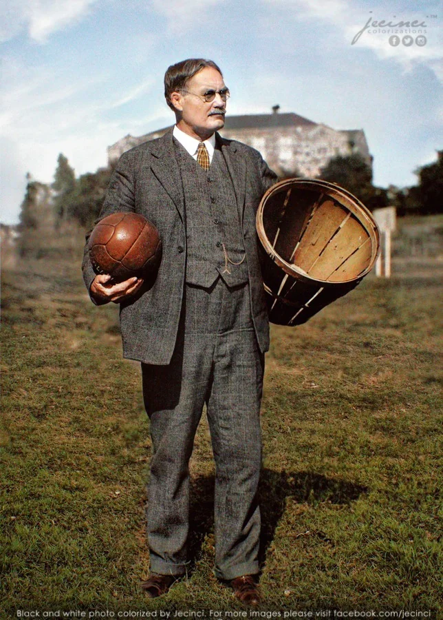

Live on the court and off? Dive into the world of basketball with NBA Enthusiasts! Here, you'll find the latest breaking news,
game recaps, and insightful analysis, keeping you on top of everything happening in the NBA. Get in-depth player stats, trade rumors, and
expert predictions, all delivered with a passion for the game. Whether you're a die-hard fan or a casual observer, NBA Enthusiasts is your
one-stop shop for all things basketball.
History

The Inventor
James Naismith, a physical education instructor at the International YMCA Training School (now Springfield College) in Springfield, Massachusetts, gets the credit for inventing basketball in 1891.
The Need
Naismith was looking for an indoor game to keep athletes active during the harsh winters. He wanted something less rough than football but still fun and competitive.
The Birth of a Game
Naismith came up with the original rules, including using peach baskets (hence the name "basket"ball) and throwing a ball through them for points. There were 13 rules in total.
The Spread
The YMCA network played a big role in popularizing basketball across the United States. The fast-paced, team-oriented sport quickly gained traction.
Naismith's Legacy
Beyond inventing the game, Naismith also founded the University of Kansas basketball program in 1898. He lived to see basketball become an Olympic sport in 1936.